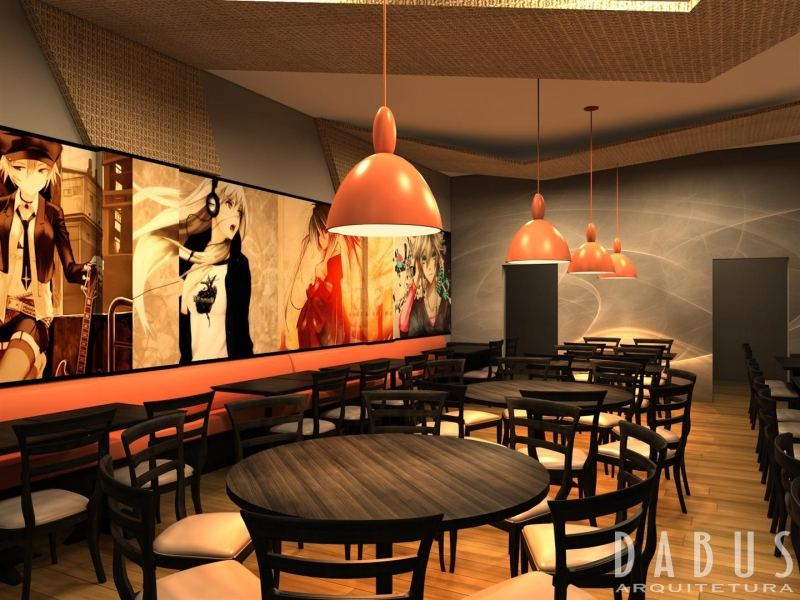
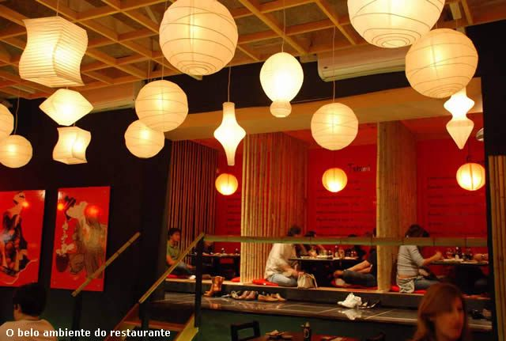

O início
Nosso restaurante foi fundado em 1990 por chefe japonês apaixonado pela culinária de seu pais natal. Com o objetivo de trazer a autêntica experiência gastronômica do japão para o Brasil, ele abriu as portas do nosso restaurante em uma pequena esquina de caxias do Sul
Expansão e Reconhecimento
Com o passar dos anos, nosso restaurante cresceu em popularidade, recebendo diversos prêmios e reconhecimento pela excelência na culinária japonesa. Hoje, temos filiais em várias cidades do Brasil, sempre mantendo a qualidade e tradição.
Nos dias atualis
Atualmente, continuamos a nos dedicar à parte da culinária japonesa, inovando em nossos pratos e proporcionando uma experiência única a cada cliente que nos visita. Nosso comproisso é com a qualidade e autenticidade, trazendo o melhor do japão para sua mesa.